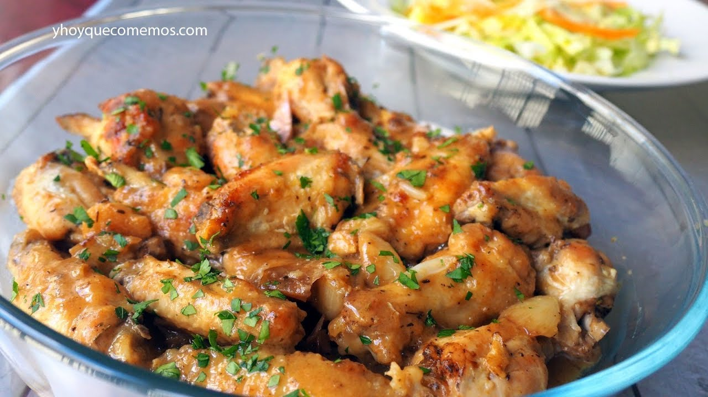

Garlic Chicken Wings

Description
Prepare delicious garlic chicken wings in just a few minutes
with this practical recipe.
Ingredients
- 2 Pounds chicken wings
- 1/2 Teaspoon oregano
- 3 Cloves of minced garlic
- 1 Tablespoon cornstarch
- 2 Tablespoons of olive oil
- 1 Tablespoon of butter
- 1/4 Cup of water
Steps
- In a bowl, wash the wings and cut the tips. Add the oregano, cornstarch, garlic, oil and marinate for 5 minutes.
- In a frying pan over medium heat, place the butter, water, and wings and cook for 5 minutes.
- Reduce heat to medium, cover the pan and let cook for 15 more minutes.
- Serve and enjoy!